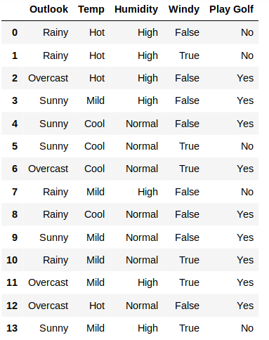
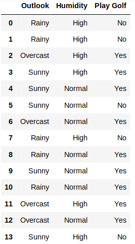

In machine learning and statistics, classification is the problem of identifying to which of a set of categories (sub-populations) a new observation belongs, on the basis of a training set of data containing observations (or instances) whose category membership is known.
Example is assigning a given email to the "spam" or "non-spam" class
An algorithm that implements classification, especially in a concrete implementation, is known as a classifier. The term "classifier" sometimes also refers to the mathematical function, implemented by a classification algorithm, that maps input data to a category.
In machine learning, naive Bayes classifiers are a family of simple "probabilistic classifiers" based on applying Bayes' theorem with strong (naive) independence assumptions between the features.
Bayes classifiers assume that the value of a particular feature is independent of the value of any other feature, given the class variable. For example, a fruit may be considered to be an apple if it is red, round, and about 10 cm in diameter. A naive Bayes classifier considers each of these features to contribute independently to the probability that this fruit is an apple, regardless of any possible correlations between the color, roundness, and diameter features.
An advantage of naive Bayes is that it only requires a small number of training data to estimate the parameters necessary for classification.
Bayes' theorem shows the relation between a conditional probability. the probability of a hypothesis given some observed pieces of evidence
where
In plain English, using Bayesian probability terminology, the above equation can be written as
There is a 40% chance of it raining on Sunday. If it rains on Sunday, there is a 10% chance it will rain on Monday. If it didn't rain on Sunday, there's an 80% chance it will rain on Monday.
"Raining on Sunday" is event A, and "Raining on Monday" is event B.
The first thing we'd normally calculate is the probability of it raining on Monday: This would be the sum of the probability of "Raining on Sunday and raining on Monday" and "Not raining on Sunday and raining on Monday"
what if we said: "It rained on Monday. What is the probability it rained on Sunday?" That is where Bayes' theorem comes in. It allows us to calculate the probability of an earlier event, given the result of a later event.
So, to calculate the probability it rained on Sunday, given that it rained on Monday:
or
In other words, if it rained on Monday, there's a 7.69% chance it rained on Sunday.
given a problem instance to be classified, represented by a vector x = ( x1, ...,xn) representing some n features (independent variables), it assigns to this instance probabilities
for each of K possible outcomes or classes Ck
Using Bayes' theorem, the conditional probability can be decomposed as
Here x = ( x1,x2 ...,xn)
In practice, there is interest only in the numerator of that fraction, because the denominator does not depend on C and the values of the features xi are given, so that the denominator is effectively constant.
So
p(Ck | x) = p(Ck) p(x | Ck)
p(Ck | x1,x2 ...,xn) = p(Ck) p(x1 | Ck) p(x2 | Ck) p(x3 | Ck) p(x4 | Ck)
Here k = 1,2,3,.....k
y_pred = argmax{p(C1 | x1,x2 ...,xn),p(C2 | x1,x2 ...,xn), ..., p(Ck | x1,x2 ...,xn)}
We are taking Play Golf Dataset.

Here we concedering only two features Outlook and Humidity. now our dataset look like below

We need to find the player will play or not if outlook is sunny and Humidity is Normal. Here we have only two classes Yes(Class1) and No(Class2). We need to find the probability for Class1(Yes) and Class2(No)
After finding probability for playing and probability for not playing from them find the max probability class as final prediction
Probability for Players will play if outlook is sunny and Humidity is Normal.
P(Yes | [Sunny,Normal]) = P(Yes) * P( Sunny | Yes) * P( Normal | Yes)
P(yes) = (9/14)*(3/9)*(6/9)
0.143
P(No | [Sunny,Normal]) = P(No) * P( Sunny | No) * P( Normal | No)
P(no) = (5/14)*(2/5)*(1/5)
0.028
After normalizing
P(Yes) = 0.83
P(No) = 0.17
Probability for playing(83%) is more than not playing(17%). So our model predition is players will play if Outlook is sunny and Humidity is normal
Scikit-learn has four implementations for Navie Bayes.The different naive Bayes classifiers differ mainly by the assumptions they make regarding the feature distribution
The likelihood of the features is assumed to be Gaussian. It is useful if features are continuous
Then, the probability distribution of v given a class Ck, p ( x = v ∣ Ck ), can be computed by plugging v into the equation for a Normal distribution parameterized by μk and σk2. That is
The parameters and are estimated using maximum likelihood.
| Person | height (feet) | weight (lbs) | foot size(inches) |
|---|---|---|---|
| male | 6 | 180 | 12 |
| male | 5.92 (5'11") | 190 | 11 |
| male | 5.58 (5'7") | 170 | 12 |
| male | 5.92 (5'11") | 165 | 10 |
| female | 5 | 100 | 6 |
| female | 5.5 (5'6") | 150 | 8 |
| female | 5.42 (5'5") | 130 | 7 |
| female | 5.75 (5'9") | 150 | 9 |
The classifier created from the training set using a Gaussian distribution assumption would be
| Person | mean (height) | variance (height) | mean (weight) | variance (weight) | mean (foot size) | variance (foot size) |
|---|---|---|---|---|---|---|
| male | 5.855 | 0.035 | 176.25 | 122.916 | 11.25 | 0.916 |
| female | 5.4175 | 0.097 | 132.5 | 558.333 | 7.5 | 1.6667 |
Let's say we have equiprobable classes so P(male)= P(female) = 0.5. This prior probability distribution might be based on our knowledge of frequencies in the larger population, or on frequency in the training set.
Below is a sample to be classified as male or female.
| Person | height (feet) | weight (lbs) | foot size(inches) |
|---|---|---|---|
| sample | 6 | 130 | 8 |
We wish to determine which posterior is greater, male or female. For the classification as male the posterior is given by
For the classification as female the posterior is given by
The evidence is a constant and thus scales both posteriors equally can be ignored.
where μ = 5.855 and σ2 = 0.035 are the parameters of normal distribution which have been previously determined from the training set. Note that a value greater than 1 is OK here - it is a probability density rather than a probability, because height is a continuous variable.
| Male | Female |
|---|---|
| P(male) = 0.5 | P(female) = 0.5 |
| p(heigt | male) = 1.578 | p(heigt | female) = 0.223 |
| p(weigt | male) = 5.9867e-06 | p(weigt | female) = 0.0167 |
| p(foot size | male) = 0.0013 | p(foot size | female) = 0.2866 |
| posterior numerator(male) = 6.19707e-09 | posterior numerator(female) = 0.00053 |
Since posterior numerator is greater in the female case, we predict the sample is female.